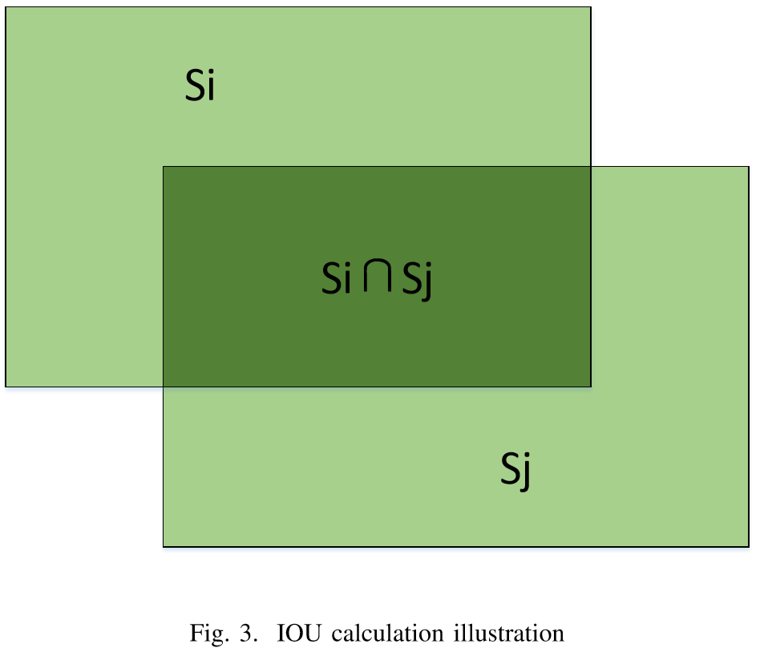

Evaluation
A sample of submission can be download here.
Results format
Participants should submit the results in one XML file, which resembles the annotations, list the name of the test set and the objects found in them.
Evaluation
We will calculate the Intersection over Union (IOU) measurement to estimate whether a region detected by the participant is correctly located or not. Let \(S_i\) denote the region detected by a participant and \(S_j\) denote the corresponding region described in the ground truth file. The IOU is calculated as follows: \[IOU = \frac{S_i\bigcap S_j}{S_i\bigcup S_j}\]

As shown in Fig. 3, \(S_i\bigcap S_j\) denotes the area of the intersection of \(S_i\) and \(S_j\) and \(S_i\bigcup S_j\) denotes the area of the union of \(S_i\) and \(S_j\) . The IOU is then calculated as the following equation. \[IOU =\frac{S_i\bigcap S_j}{S_i+S_j-S_i\bigcap S_j}\]If the IOU value is larger than a threshold, this region will be considered correctly detected. We will evaluate the results under two \(\mathit{IOU\_THRESHOLD}\) 0.6 and 0.8 considering different precision requirement.
Average Precision (AP) is the metric to evaluate each sub-task. For a given sub-task, the precision/recall curve is computed from a methods ranked output. Recall is defined as the proportion of all positive examples ranked above a given rank. Precision is the proportion of all examples above that rank which are from the positive class. The AP summarises the shape of the precision/recall curve, and is defined as the mean precision at a set of eleven equally spaced recall levels \([0,0.1,\cdots,1]\): \[AP = \frac{1}{11}\times\sum_{r\in\{0,0.1,\dots,1\}}\mathit{Pinterp}(P)\]
The precision at each recall level \(r\) is interpolated by taking the maximum precision measured for a method for which the corresponding recall exceeds \(r\): \[\mathit{Pinterp}(P) = \max_{\tilde{r}:\tilde{r}\ge r}\mathit{p}(\tilde{r})\] Where \(p(\tilde{r})\) is the measured precision at recall \(\tilde{r}\). For those participate in the integrated task, the mean Average Precision (mAP) is calculated to evaluate the submitted results.
In addition, we also take the \(F1\) metric into consideration, a results ranked by \(F1\) metric will also be reported.
In summary, the competition will evaluate the participant's models under two different metrics: \(mAPs\) and \(F1\), with two \(IOU\_THRESHOLD\) 0.6 and 0.8.
Evaluation Details
For any questions, please contact chlxyd@pku.edu.cn.